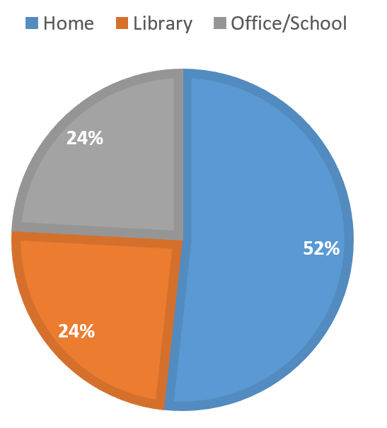
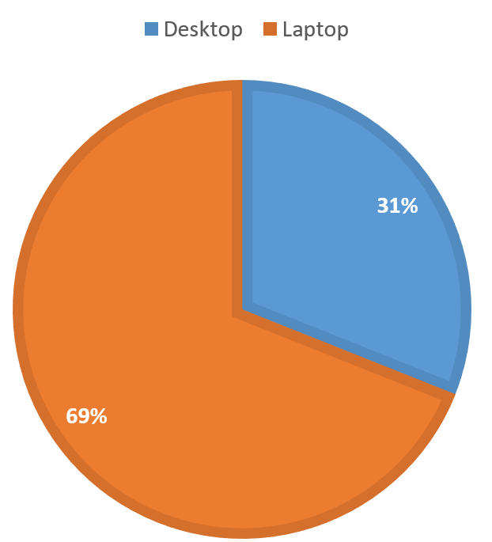
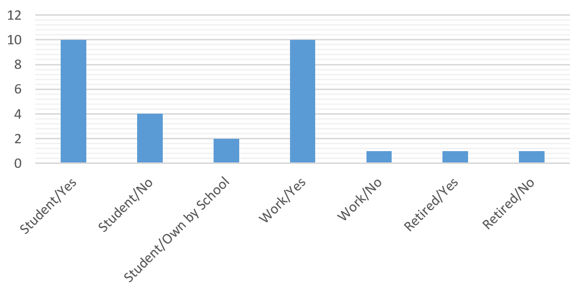
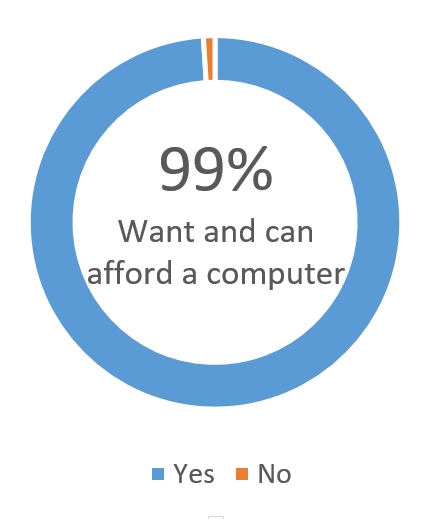
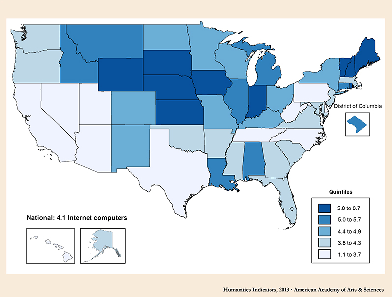

Data and Visualization
From our survey:
Where do you usually use a computer?
This chart indicate that 52% of the people prefer to work on a computer at home where 24% of them like using computer in a library. Other 24% of people will use their computer in their office or at school.
Which do you prefer to use?
More than a half people prefer to own a Laptop instead of a desktop these days.
Do you own a computer?
Almost all students and people who have work own at least one computer. Some students may not own a computer, but their school provide a computer for him/her to finish assignments or search information through Internet during school days. People who are retired or does not have a job are less likely to get access to a computer.
Can you afford a computer, if so do you want one?
Almost everyone can afford and willing to have a computer.
Our Survey Results:
| Job | Age | What kind of computer do you want? | Number of smart devices? | Do you own a computer/laptop? | Where do you usually use computer |
|---|---|---|---|---|---|
| Student | 18 | Desktop | 7 | Yes | Home |
| Student | 18 | Laptop | 7 | No | Home |
| Student | 18 | Laptop | 3 | No | Home |
| Student | 19 | Laptop | 3 | Yes | Library |
| Student | 20 | Laptop | 3 | Yes | Library |
| Student | 19 | Laptop | 2 | Yes | Library |
| Student | 19 | Laptop | 2 | No | Home |
| Student | 19 | Laptop | 3 | Yes | Home |
| Student | 19 | Laptop | 2 | Yes | Library |
| Student | 20 | Laptop | 3 | Yes | Home |
| Student | 19 | Laptop | 4 | Yes | Library |
| Cheif Financial Officer | 53 | Laptop | 2 | Yes | Home |
| Homemaker | 47 | Laptop | 12 | No | Home |
| Student | 19 | Laptop | 2 | No | Home |
| Painter | 48 | Desktop | 1 | Yes | Home |
| Student | 16 | Desktop | 2 | Yes | Home |
| Student | 13 | Laptop | 2 | Yes | School |
| Photographer | 43 | Laptop | 5 | eso | Home |
| Editor | 36 | Desktop | 3 | Yes | Office |
| Journalist | 31 | Laptop | 3 | Yes | Office |
| Teacher | 49 | Desktop | 3 | Yes | Office |
| Student | 17 | Laptop | 2 | No | School |
| Policeman | 33 | Desktop | 3 | Yes | Home |
| Policeman | 35 | Desktop | 3 | Yes | Home |
| Student | 18 | Laptop | 7 | No | Home |
| Student | 17 | Laptop | 2 | No | School |
| Lawyer | 63 | Desktop | 5 | Yes | Office |
| Retired | 78 | Desktop | 2 | Yes | Library |
| Retired | 70 | Laptop | 0 | No | Library |
| Teacher | 56 | Laptop | 2 | Yes | Office |
From online:
These are two pie charts we found on https://code.org/advocacy/state-facts/IN.pdf, it indicates that although many parents want their children to learn computer science in an early age, about 60% of the high school are NOT able to provide a computer programming class.
Support K-12 Computer Science Education in Indiana. Rep. Code, 2013. https://code.org/advocacy/state-facts/IN.pdf. Accessed on 29 Nov. 2016.
This is a screen shot from a government website selling used computers. From this page we can know that we can buy used computers in a very low price, so it’s possible for us to set up computer labs all over the state of Indiana.
Public Libraries Computers (connected to internet) Per 5,000 People
This chart shows the amount of computers per 5,000 people that are in public libraries and have internet, by state. This chart is from 2013 and shows that, at that time, Indiana had a high computer to population ratio, 5.8 to 8.7.
"Internet Access at Public Libraries.” Humanities Indicator , American Academy of Arts and Sciences, 2016, http://humanitiesindicators.org/content/indicatordoc.aspx?i=418. Accessed on 1 December 2016.